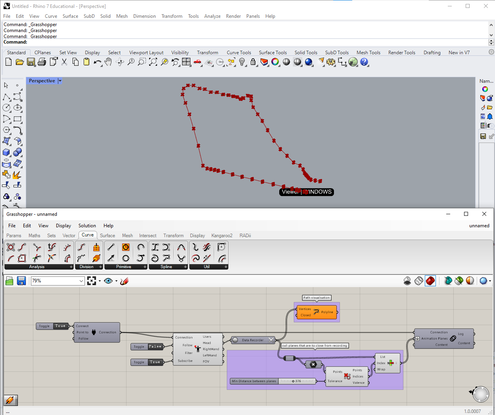

5. Tutorial: Collaborative working¶
Radii can be used in a linear way, sending commands and geometry from Grashopper to the viewers.
The components in the Subscribe section in Rhino Grashopper Radii can add the reverse diction to the workflow. With them we can send data from the viewers through the server into Grashopper. Because of the amount of possibilities with these components, we will only give a few examples that we found useful.
Working and assembling geometry together in the viewers on a channel:
Geometry is first send from Grashopper via the PublishGeometry to the viewers, it is important that the shared option is selected in the component It can then be modified in collaboration and reimported via the Subscribe Geometry component. After baking or internalizing it can be permanently stored.
Components needed:
Recording the viewers movement and using it to create an animation path.
Components needed:

Data Recorder
Cull Duplicates
List Item